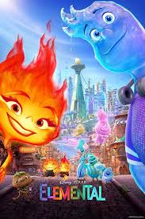
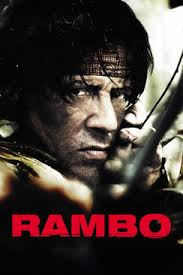

Los Increibles

Los Increíbles 2 sigue a la familia Parr mientras Helen (Elastigirl)
lidera una campaña para legalizar a los superhéroes, y Bob
(Mr. Increíble) cuida a los niños, incluyendo al bebé Jack-Jack y sus caóticos poderes. Todo se complica con la amenaza de un nuevo villano, El Rapta-Pantallas, que obliga a la familia a unirse nuevamente para salvar el mundo.
Elemental

Elemental es una película de Pixar que presenta un mundo donde los elementos (fuego, agua, tierra y aire) coexisten como personajes. La historia sigue a Ember, una joven de fuego, y Wade, un chico de agua, mientras desafían sus diferencias y muestran que las conexiones inesperadas pueden trascender barreras culturales y naturales.
Tintin

Las Aventuras de Tintín (2011) es una película animada dirigida por Steven Spielberg, basada en los cómics de Hergé. Sigue al joven reportero Tintín, su perro Milú y el capitán Haddock en una emocionante búsqueda del tesoro del Unicornio, enfrentándose a peligros y un astuto villano que busca lo mismo. La película combina acción, misterio y humor en un estilo visual impresionante.
Rambo

Rambo (1982), dirigida por Ted Kotcheff, sigue a John Rambo, un veterano de Vietnam, mientras enfrenta la hostilidad de un pequeño pueblo y un sheriff abusivo. Cuando es acorralado, desata su entrenamiento militar en una lucha por sobrevivir, destacando los efectos de la guerra en los soldados. La película combina acción intensa con un mensaje sobre el aislamiento y el trauma.